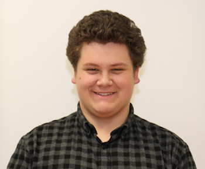

Stammdaten
 |
Taylor R. KoflerJahrgang: 2007Adresse: Dr. Semmelweis-Straße 20 Wohnort: 9500 Villach/Ktn. Mail: taylor.kofler@itlabs.at |
 |
Taylor R. KoflerJahrgang: 2007Adresse: Dr. Semmelweis-Straße 20 Wohnort: 9500 Villach/Ktn. Mail: taylor.kofler@itlabs.at |
Name ist Taylor Renee Kofler, ich wurde 2007 in Villach/Ktn. geboren. Ich bin österreichischer Staatbürger. Meine schulische Ausbildung absolvierte ich an der Friedensschule Villach und an der MS-Auen Villach. Gegenwärtig befinde ich mich in der Lehre im bfi IT-L@B in Villach.
In meiner Freizeit lese ich gerne, beschäftige mich mit programmieren, gehe schwimmen und spiele Computerspiele, insbesondere solche mit Schwerpunkten auf Taktik und Strategie.
Hauptziel besteht darin, meine Ausbildung als Applikationsentwickler in einem Unternehmen mit wirtschaftlicher Ausrichtung erfolgreich abzuschließen und anschließend weiterhin in dieser Firma tätig zu sein.
Ich absolviere derzeit eine Lehre als angehender Applikationsentwickler im bfi IT-L@B Villach. Meine fundierten Kenntnisse, die ich bereits während meiner Mittelschulzeit mit Schwerpunkt Informatik erworben habe, bilden die Grundlage für meine Ausbildung. Seit dem Start meiner Ausbildung im Frühling 2023 habe ich bereits viele Fähigkeiten in der Softwareentwicklung erworben.
Aktuell konzentriere ich mich besonders auf die Erstellung von Webseiten mit Hilfe von HTML5, CSS3 und JavaScript sowie auf die Programmiersprache C#. Im Verlauf meiner Ausbildung werde ich auch Python, PHP, MySQL und andere Programmier-, Datenbank- und Auszeichnungssprachen kennen lernen.
Die Ausbildung am bfi IT-L@B Villach folgt der trialen Ausbildungsform, die eine Kombination aus Berufsschule, praxisorientierter Lehrwerkstätte (bfi IT-L@B) und praxisorientierter Partnerbetriebe in der Wirtschaft beinhaltet.
Ich habe bereits während meiner Zeit an der Mittelschule den ICDL (International Certification of Digital Literacy) erworben. Meine Kenntnisse umfassen Computer-Grundlagen (MS-Windows), Online-Grundlagen (Browser), Textverarbeitung (MS-Word), Tabellenkalkulation (MS-Excel), Präsentation (MS-PowerPoint), Online-Zusammenarbeit und IT-Security. Zusätzlich verfüge ich über grundlegende Programmierkenntnisse in C#, HTML5 und CSS3.
Seit März 2023 arbeite ich mit den Programmen MS-Visual Studio 2019 und Visual Studio Code 2019 in meinem Lehrbetrieb. Privat verwende ich die Version 2022. Für das Entwerfen von Flussdiagrammen nutze ich PapDesigner, während ich für schnelle Code-Ideen Notepad++ verwende.
Zurzeit arbeiten meine Kolleg*innen und ich an einem sehr interessanten Projekt namens „bfi IT-L@B Bildungspfad Applikatiosnentwicklung-Coding erleben“. In diesem Projekt geht es um die Verbreitung von Wissen über das Berufsbild Applikationsentwicklung-Coding. Konkret geht es darum, Jugendliche sowie IT-Interessierten Personen die notwendigen Informationen durch einem Art Schnitzeljagd zukommen zu lassen, sie eventuell für diesen Beruf zu begeistern und zu einem Schnupperpraktikum zu bewegen. Ein zweites, etwas kleineres Projekt war, ein Netzwerk mit 4 bis 5 Rechnern aufzubauen und anschließend eine Präsentation über Fortschritt und Ergebnis zu bringen.
Mein erstes eigenständiges, für mich persönlich wichtiges, Projekt war die Erstellung einer geschäftlichen Webseite. Ich wählte das Thema: Verkauf von Bildern. Ich finde, die Seite ist mir gut gelungen. Ein privates Projekt, war die Erstellung eines Programmes in C#, mit der ich die Position des Planeten Venus mit einer Genauigkeit von ca. 95% berechnen kann. Dies habe ich unter Verwendung der VSOP87A-Reihenberechnung erreicht (mit etwas Hilfe von meinem Onkel).
Am 27.07. 2023 habe ich mein erstes JavaScript Webgame programmiert. Konkret geht es in diesem "Spiel" das man 22 Fragen beantworten muss. Bei jeder richtigigen Antwort bekommt der User 30 Punkte. Bei falschen Antworten werden jedoch keine Punkte abgezogen. In diesem Quiz sind Fragen zum Thema programmieren enthalten wie z.B. "Was heißt HTML und CSS?" oder "Wie deklariert man eine Ganzzahl in C#?".